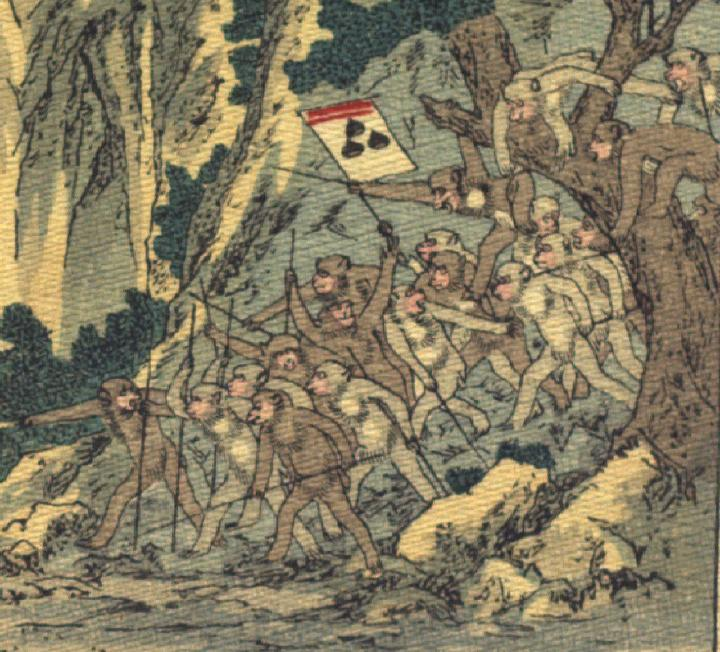

猿の軍団。20体ほどの猿たちが、棒のようなものを持ち、後脚で立ち上がって、山から降りてくる。猿のうちの1体は、3つの栗のようなものが描かれた旗をあげている。
著作者：J.Dautremer／出典：親書誌：U426_nichibunken_0106：La bataille du singe et du crabe／日付：2006／資源識別子：U426_nichibunken_0106_0005_0000
Copyright (c)2010- International Research Center for Japanese Studies, Kyoto, Japan. All rights reserved.